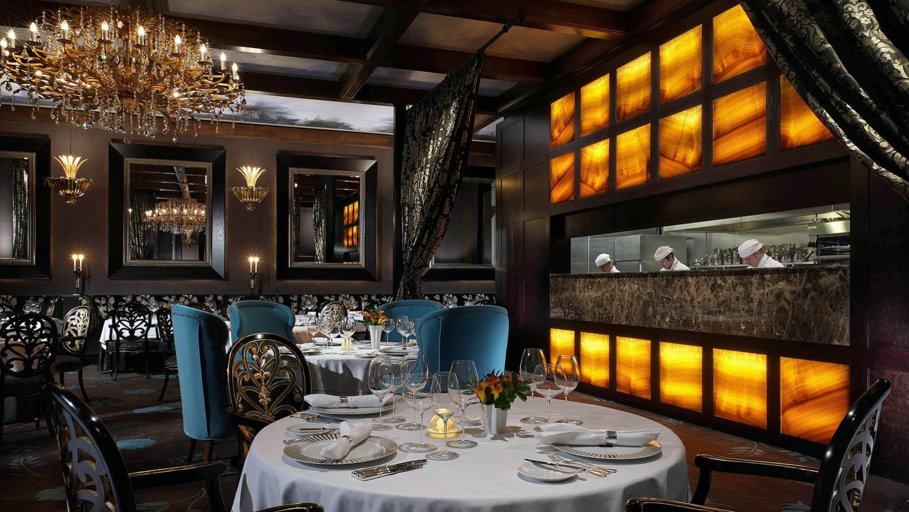

The Sheep's Head NYC
always the tastiest...
Call ahead for reservations.... 212-334-4773
open daily from 4pm- midnight
& weekends 5pm - midnight

entre
|
main menu
|
salads
Click here for information on
why lamb is most ethical meat to comsume